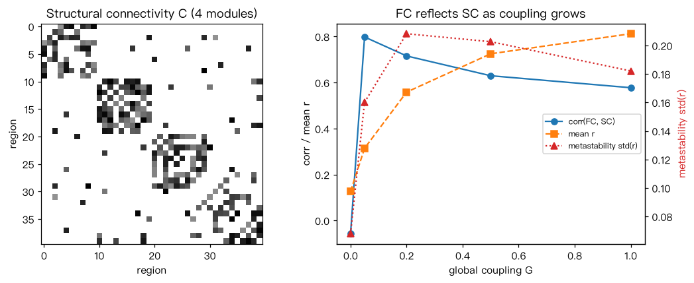

Example10 / 11
模块化“连接组”上的 Hopf 全脑模型：模拟功能连接与亚稳态
每个脑区是一个 Stuart–Landau（Hopf 范式）振子 z_j = x_j + i y_j： dz_j = [(a + i w_j) z_j - |z_j|^2 z_j + G sum_k C_jk (z_k - z_j)] dt + beta dW_j a=-0.02（略低于分岔点，噪声驱动的振荡），w_j 对应 0.04–0.07 Hz 的 fMRI 慢波频率。 结构连接 C 用加权随机分块网络代替真实连接组（4 个模块 x 10 个脑区）。 对不同全局耦合 G 计算：模拟 FC（x 的相关矩阵）与 C 的相关、以及亚稳态（r(t) 的标准差）。 解读：G 太小时 FC 与 SC 几乎无关；G 增大时 FC 逐渐反映结构；过大时全局同步、亚稳态下降。
Output输出图

Output文字输出
G=0.00 corr(FC, SC)=-0.06 平均 r=0.13 亚稳态 std(r)=0.068 G=0.05 corr(FC, SC)=0.80 平均 r=0.31 亚稳态 std(r)=0.160 G=0.20 corr(FC, SC)=0.72 平均 r=0.56 亚稳态 std(r)=0.208 G=0.50 corr(FC, SC)=0.63 平均 r=0.73 亚稳态 std(r)=0.203 G=1.00 corr(FC, SC)=0.58 平均 r=0.81 亚稳态 std(r)=0.182
Code代码
# 每个脑区是一个 Stuart–Landau（Hopf 范式）振子 z_j = x_j + i y_j：
# dz_j = [(a + i w_j) z_j - |z_j|^2 z_j + G sum_k C_jk (z_k - z_j)] dt + beta dW_j
# a=-0.02（略低于分岔点，噪声驱动的振荡），w_j 对应 0.04–0.07 Hz 的 fMRI 慢波频率。
# 结构连接 C 用加权随机分块网络代替真实连接组（4 个模块 x 10 个脑区）。
# 对不同全局耦合 G 计算：模拟 FC（x 的相关矩阵）与 C 的相关、以及亚稳态（r(t) 的标准差）。
# 解读：G 太小时 FC 与 SC 几乎无关；G 增大时 FC 逐渐反映结构；过大时全局同步、亚稳态下降。
import numpy as np
import networkx as nx
from scipy.signal import hilbert
rng = np.random.default_rng(0)
sizes = [10] * 4
G0 = nx.random_partition_graph(sizes, 0.6, 0.05, seed=1)
N = G0.number_of_nodes()
C = nx.to_numpy_array(G0, nodelist=range(N)) * rng.uniform(0.5, 1.0, (N, N))
C = np.triu(C, 1); C = C + C.T; C /= C.max()
w = 2 * np.pi * rng.uniform(0.04, 0.07, N)
a, beta, dt, T = -0.02, 0.02, 0.1, 3000.0
iu = np.triu_indices(N, 1)
def run(Gc, seed=0):
r_ = np.random.default_rng(seed)
z = 0.1 * (r_.standard_normal(N) + 1j * r_.standard_normal(N))
xs = []
deg = C.sum(1)
for n in range(int(T / dt)):
coup = Gc * (C @ z - deg * z)
z = z + dt * ((a + 1j * w) * z - np.abs(z) ** 2 * z + coup) \
+ beta * np.sqrt(dt) * (r_.standard_normal(N) + 1j * r_.standard_normal(N))
if n % 10 == 0 and n * dt > 500:
xs.append(z.real.copy())
X = np.array(xs)
FC = np.corrcoef(X.T)
ph = np.angle(hilbert(X - X.mean(0), axis=0))
r_t = np.abs(np.exp(1j * ph).mean(1))
return np.corrcoef(FC[iu], C[iu])[0, 1], r_t.mean(), r_t.std()
Gcs, out = [0.0, 0.05, 0.2, 0.5, 1.0], []
for Gc in Gcs:
sfc, rbar, meta = run(Gc)
out.append((sfc, rbar, meta))
print("G=%.2f corr(FC, SC)=%.2f 平均 r=%.2f 亚稳态 std(r)=%.3f" % (Gc, sfc, rbar, meta))
import matplotlib.pyplot as plt
out = np.array(out)
fig, (ax1, ax2) = plt.subplots(1, 2, figsize=(10, 4))
ax1.imshow(C, cmap="Greys"); ax1.set_title("Structural connectivity C (4 modules)")
ax1.set_xlabel("region"); ax1.set_ylabel("region")
ax2.plot(Gcs, out[:, 0], "o-", label="corr(FC, SC)")
ax2.plot(Gcs, out[:, 1], "s--", label="mean r")
ax2b = ax2.twinx(); ax2b.plot(Gcs, out[:, 2], "^:", c="tab:red", label="metastability std(r)")
ax2b.set_ylabel("metastability std(r)", color="tab:red")
ax2.set_xlabel("global coupling G"); ax2.set_ylabel("corr / mean r")
h1, l1 = ax2.get_legend_handles_labels(); h2, l2 = ax2b.get_legend_handles_labels()
ax2.legend(h1 + h2, l1 + l2, fontsize=8, loc="center right"); ax2.set_title("FC reflects SC as coupling grows")
plt.tight_layout(); plt.show()Run在浏览器中运行
首次加载 Python 环境约需 20–40 秒；可以修改参数后重新运行。